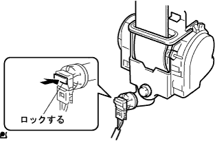
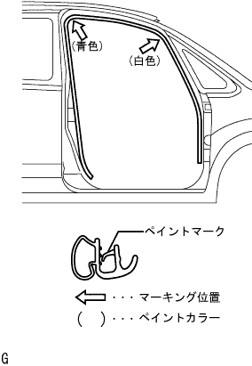

|
テープを使用し、図の位置(マーキング)に合わせてルーフワイヤハーネスを取り付ける。
テープのり離型紙を接着面に触れないようにはがす。
接着部(テープ)に沿ってルーフワイヤハーネスを貼り付ける。
- ■ 注 意 ■
- ルーフワイヤハーネスを確実に貼り付けること。
ルーフ ヘッドライニングASSY 取り付け |
| 1. ルーフ ヘッドライニングASSY取り付け |
|
テープを使用し、図の位置(マーキング)に合わせてルーフワイヤハーネスを取り付ける。
テープのり離型紙を接着面に触れないようにはがす。
接着部(テープ)に沿ってルーフワイヤハーネスを貼り付ける。
| 2. バイザ ホルダ取り付け |
バイザホルダのブラケットを回転させ、ツメを起こしバイザホルダ2個を取り付ける。
| 3. バイザASSY RH取り付け |
スクリュー2本でバイザを取り付ける。
| 4. バイザASSY LH取り付け |
スクリュー2本でバイザを取り付ける。
| 5. アシストグリップASSY取り付け（FR LH） |
ツメをかん合させてアシストグリップを取り付ける。
ツメをかん合させてアシストグリップカバー2個を取り付ける。
| 6. アシスト グリップ取り付け（RR） |
ボルト4本でアシストグリップ2個を取り付ける。
| 7. マップ ランプASSY取り付け |
コネクタを接続する。
ツメをかん合させてマツプランプASSYを取り付ける。
スクリュー2本を取り付ける。
ツメをかん合させてレンズを取り付ける。
| 8. ルーム ランプASSY NO.1取り付け |
コネクタを接続する。
ツメをかん合させてルームランプを取り付ける。
ツメをかん合させてレンズを取り付ける。
| 9. フロントピラー ガーニッシュ LH取り付け |
 |
ガーニッシュ下部のツメを先に入れる。
全てのクリップをかん合させ、フロントピラーガーニッシュLHを取り付ける。
| 10. ピラーNO.1 ガーニッシュ LH取り付け |
ツメをかん合させピラーNo.1ガーニツシユを取り付ける。
| 11. フロントピラー ガーニッシュ RH取り付け |
 |
ガーニッシュ下部のツメを先に入れる。
全てのクリップをかん合させ、フロントピラーガーニッシュRHを取り付ける。
| 12. フロントピラー ガーニッシュ LWR RH取り付け |
 |
ツメをかん合させ、フロントピラーガーニッシュLWR RHを取り付ける。
| 13. センタピラー ガーニッシュ LH取り付け |
コネクタを接続する。
 |
クリツプをかん合させセンターピラーガニツシユLHを取り付ける。
| 14. ルーフサイド ガーニッシュ INN LH取り付け |
 |
クリツプをかん合させてルーフサイドインナガーニツシユLHを取り付ける。
| 15. デッキトリムサイド パネルASSY LH取り付け |
 |
クリップおよびツメをかん合させデツキトリムサイドパネルASSY LHを取り付ける。
| 16. リヤシート3ポイントタイプ ベルトASSY OUT LH取り付け（フロアアンカ部） |
ボルトでリヤシート 3ポイントタイプ ベルトASSY OUT LH（フロアアンカ部）を締め付ける。
| 17. センタピラー ガーニッシュ RH取り付け |
 |
クリツプをかん合させセンターピラーガニツシユRHを取り付ける。
| 18. フロントシート アウタベルトASSY RH取り付け |
ELRロック開始の傾斜角度点検
 |
リトラクタを取り付け状態から静かに動かしたとき、全方向に対してベルトのロックが15°以内でロックしないことを点検し、45°以上でロック状態を保持することを点検する。
ボルト2本で、フロントシートアウタベルトASSY RHのリトラクタ部を仮締めする。
上部→下部の順にフロントシートアウタベルトASSY RHのリトラクタ部を本締めする。
ボルトで、フロントシートアウタベルトASSY RHのショルダアンカ部を取り付ける。
|  |
コネクタ(プリテンショナ用)を接続し、ロッキングボタンをロックさせる。
ELRロック点検
車両取り付け状態において、すばやくシートベルトを引き出したとき、シートベルトがロックすることを確認する。
| 19. シート ベルト アンカ カバー キャップ取り付け |
 |
ツメのかん合を合わせ、シートベルトアンカカバーキャップを取り付ける。
| 20. ルーフサイド ガーニッシュ INN RH取り付け |
 |
クリップをかん合させてルーフサイドインナガーニッシュRHを取り付ける。
| 21. デッキトリムサイド パネルASSY RH取り付け |
 |
クリツプおよびツメをかん合させて、デッキトリムサイドパネルASSY RHを取り付ける。
| 22. サイドNO.1 トリムASSY RH取り付け |
 |
クリップおよびツメをかん合させサイドNo.1トリムASSYを取り付ける。
| 23. リヤシート 3ポイントタイプ ベルトASSY OUT RH取り付け（フロアアンカ部） |
ボルトでリヤシート 3ポイントタイプ ベルトASSY OUT RH（フロアアンカ部）を締め付ける。
| 24. フロントシート アウタベルトASSY RH取り付け（フロアアンカ部） |
ボルトで、フロントシートアウタベルトASSY RHのフロアアンカ部を取り付ける。
| 25. ラップベルト アウタアンカ カバー取り付け |
 |
ツメのかん合を合わせ、ラップベルト アウタアンカ カバーを取り付ける。
| 26. バックドアスカッフ プレート取り付け |
 |
両端上部のツメ位置を合わせ、クリツプをかん合させてバツクドアスカツフプレートを取り付ける。
| 27. リヤフロア カーペット取り付け |
| 28. スペアホイール カバーASSY取り付け |
| 29. バックドア ウエザストリップ取り付け |
 |
ウェザストリップのペイントマーク(白色および緑色、どれか1箇所)とボデー側のウェザストリップ取り付け用切り欠き部(矢印部分)を合わせ、バックドアウェザストリップを取り付ける。
| 30. リヤドア オープニングトリム ウェザストリップ LH取り付け |
ウェザストリップのペイントマーク(黄色および白色、どれか1箇所)とボデー側のウエザストリッツプ取り付け用切り欠き部(矢印部分)を合わせ、リヤドアオープニングトリムウエザストリップLHを取り付ける。

| 31. デッキサイドトリム カバー FR LH取り付け |
 |
車両後方に押し込みツメをかん合させ、デツキサイドトリムカバーFR LHを取り付ける。
| 32. フロントドアスカッフ プレート LH取り付け |
 |
フロントドアスカッフプレート LH前端部のツメを差し込む。
ツメおよびクリップををかん合させ、フロントドアスカッフプレートLHを取り付ける。
| 33. フロントドア オープニングトリム ウェザストリップ RH取り付け |
|  |
ウェザストリップのペイントマーク(白色、どちらか1箇所)を合わせ、フロントドアオープニングトリムウエザストリツプRHを取り付ける。
| 34. カウルサイドトリム ボード RH取り付け |
 |
車両前方に押し込みクリップをかん合させ、カウルサイドトリムボードRHを取り付ける。
| 35. フロントドアスカッフ プレート RH取り付け |
 |
スカッフプレート前端部および後端部のツメをかん合させる。
ツメをかん合させ、フロントドアスカッフプレートRHを取り付ける。
| 36. リヤシートバック ヒンジSUB-ASSY RH取りはずし·取り付け（リヤシート一体可倒式） |
 |
ボルトで、リヤシートバツクヒンジRHを締め付ける。
| 37. リヤシートバック ヒンジSUB-ASSY LH取り付け（リヤシート一体可倒式） |
ボルトで、リヤシートバツクヒンジLHを締め付ける。
| 38. リヤシートクッションASSY取り付け（リヤシート一体可倒式） |
リヤシートクッションASSY後部のフックをかん合させる。
リヤシートベルトを、リヤシートクッションカバー & パッド後部のゴムバンドに通す。
 |
リヤシートクッションASSY前部のフックをかん合させる。
| 39. リヤシートバックASSY取り付け（リヤシート一体可倒式） |
ボルト2本をでリヤシートバックASSYを取り付ける。
 |
クリップ2個を取り付ける。
| 40. リヤシートクッションASSY取り付け（リヤシート分割可倒式） |
リヤシートクッションASSY前側をリヤシート クッション ロック ストライカにロックさせる。
リヤシートベルトを、リヤシートクッションカバー & パッド後部のゴムバンドに通す。
 |
ボルトで、リヤシートヒンジLHを取り付ける。
リヤシートバックヒンジＲＨにスナップリングを取り付ける。
リヤシートヒンジRHを、リヤシートクッションASSY右側ブラケットの角パイプに挿入する。
| 41. リヤシートバックASSY LH取り付け（リヤシート分割可倒式） |
ボルト2本でリヤシートバックを取り付ける。
 |
クリップ2個を取り付ける。
| 42. リヤシートバックASSY RH取り付け（リヤシート分割可倒式） |
ボルト2本でリヤシートバックを取り付ける。
クリップ2個を取り付ける。